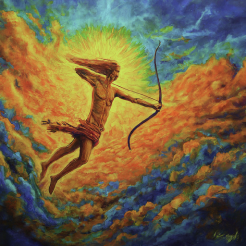

I am motivated through my friends who are always creative and inspire me.
Gemini Moon
In stressful situations, I am usually very calm at face value but internally I’m definitely freaking out.
Taurus Rising
I'm usually quiet but I try to match people’s energy and vibe when meeting for the first time.
Gemini Mercury
I prefer in person communication or hand gestures.
Taurus Venus
My love language is physical touch and words of affirmation.
Virgo Mars
I get my goals done by locking in, then often second guessing myself.
Sagittarius Jupiter

I like trying new things and getting out of my comfort zone, meeting new people, reading, and doing things for myself. I think selfishness can be a sign of growth.
Gemini Saturn
I handle commitments by going to the person. Sometimes I lie and make excuses if I don't feel like following through.
Aquarius Uranus
Change for me, on the emotional end is frightnening, but career wise is exciting.
Aqaurius Neptune
I take my dreams with a grain of salt and put them on the backburner because I love making money from restaurant jobs.
Sagittarius Pluto
I adhere and acclimate myself to change, I will immediately fill my time with productive things.